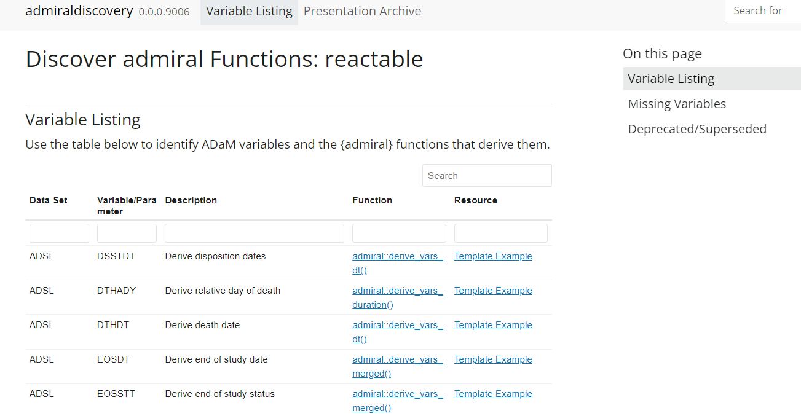

library(tibble)
library(admiral)
library(lubridate)
adsl <- tribble(
~STUDYID, ~USUBJID, ~TRTEDT, ~DTHDT,
"PILOT01", "01-1130", ymd("2014-08-16"), ymd("2014-09-13"),
"PILOT01", "01-1133", ymd("2013-04-28"), ymd(""),
"PILOT01", "01-1211", ymd("2013-01-12"), ymd(""),
"PILOT01", "09-1081", ymd("2014-04-27"), ymd(""),
"PILOT01", "09-1088", ymd("2014-10-09"), ymd("2014-11-01"),
)admiral 1.0.0 is out on CRAN. This release brings several new features to your tool set for working with ADaMs in R. admiral 1.0.0 also brings needed stability to users who were wishing to adopt admiral, but were a little worried by the fast deprecation and experimentation for pre-v1.0.0 releases.
This blog post will discuss our commitment to stability, walk you through the new features available, discuss some of the bug fixes, a push for common APIs across our functions, and showcase the resources available to help you on-board to admiral.
Commitment to Stability
Enter Superseded!!
Now with the release of 1.0.0 we are going to supersede functions going forward. This is the process where when we introduce new functions to replace other functions, we will no longer fast-deprecate the replaced functions. Now we will supersede them, i.e. we will keep the function in the codebase for a long time, but recommend the use of the new function. If the function were to be removed from the codebase this will be done many years from the time it is superseded. Please note that although superseded functions are not in scope for active development, any bugs identified within them will nevertheless be fixed.
New Features
We have 3 new functions available in this release:
Add the Worst or Best Observation for Each By Group as New Variables — derive_vars_extreme_event • admiral derive_vars_extreme_event() Merge an Existence Flag From Multiple Sources — derive_var_merged_ef_msrc • admiral derive_var_merged_ef_msrc() Adds Variable(s) Computed from the Analysis Value of one or more Parameters — derive_vars_computed • admiral derive_vars_computed()
and a new option in
derive_vars_extreme_event()
This function takes available records from user-defined events by selecting the extreme observations and appending them as a variable(s) to your dataset.
Let’s take a peek with a very simple example where we just use ADSL! The documentation for
Let us make some dummy ADSL data and load up our packages. The goal here is to add two new variables LSTALVDT and DTHFL based on a list of objects that are used to specify the following:
- the dataset to look at
- a set of conditions
- what to set the values for the new variables
In this example, we only use ADSL as the source dataset, so it is a bit contrived, but much more compact for us. Note the use of the events that is taking in our list of event objects and the different conditions and values we set to create our LSTALVDT and DTHFL variables.
derive_vars_extreme_event(
adsl,
by_vars = exprs(STUDYID, USUBJID),
events = list(
event(
dataset_name = "adsl",
condition = !is.na(DTHDT),
set_values_to = exprs(LSTALVDT = DTHDT, DTHFL = "Y")
),
event(
dataset_name = "adsl",
condition = !is.na(TRTEDT),
set_values_to = exprs(LSTALVDT = TRTEDT, DTHFL = "N")
)
),
source_datasets = list(adsl = adsl),
order = exprs(LSTALVDT),
mode = "last",
new_vars = exprs(LSTALVDT = LSTALVDT, DTHFL = DTHFL)
)# A tibble: 5 × 6
STUDYID USUBJID TRTEDT DTHDT LSTALVDT DTHFL
<chr> <chr> <date> <date> <date> <chr>
1 PILOT01 01-1130 2014-08-16 2014-09-13 2014-09-13 Y
2 PILOT01 01-1133 2013-04-28 NA 2013-04-28 N
3 PILOT01 01-1211 2013-01-12 NA 2013-01-12 N
4 PILOT01 09-1081 2014-04-27 NA 2014-04-27 N
5 PILOT01 09-1088 2014-10-09 2014-11-01 2014-11-01 Y Okay! We used a very small example to showcase how to find extreme observations and appending this information as new variables to our ADSL dataset. Highly recommend checking out the more detailed example in the function documentation to see its true power!
derive_var_merged_ef_msrc()
This function has some similarity to
We develop some simple dummy data for ADSL, CM and PR. Our goal is to flag patients who have CMCAT = "ANTI-CANCER" in the CM dataset or have records in the PR dataset. Any participants who meet these conditions will have our new variable CANCTRFL set as "Y".
adsl <- tribble(
~USUBJID,
"1",
"2",
"3",
"4",
)
cm <- tribble(
~USUBJID, ~CMCAT, ~CMSEQ,
"1", "ANTI-CANCER", 1,
"1", "GENERAL", 2,
"2", "GENERAL", 1,
"3", "ANTI-CANCER", 1
)
pr <- tribble(
~USUBJID, ~PRSEQ,
"2", 1,
"3", 1
)Now we have the argument flag_events that takes a list of objects where we define the conditions and datasets to check in.
derive_var_merged_ef_msrc(
adsl,
flag_events = list(
flag_event(
dataset_name = "cm",
condition = CMCAT == "ANTI-CANCER"
),
flag_event(
dataset_name = "pr"
)
),
source_datasets = list(cm = cm, pr = pr),
by_vars = exprs(USUBJID),
new_var = CANCTRFL
)# A tibble: 4 × 2
USUBJID CANCTRFL
<chr> <chr>
1 1 Y
2 2 Y
3 3 Y
4 4 <NA> Let’s go! We searched over multiple datasets, CM and PR, with multiple conditions and appended a new variable CANCTRFL to ADSL setting to "Y" if those conditions were met.
derive_vars_computed()
This function is very similar to ADSL, e.g. baseline variables.
Let’s make some dummy data for an ADSL and ADVS. Our goal is to derive a BMIBL variable pulled from ADVS and append to ADSL.
adsl <- tribble(
~STUDYID, ~USUBJID, ~AGE, ~AGEU,
"PILOT01", "01-1302", 61, "YEARS",
"PILOT01", "17-1344", 64, "YEARS"
)
advs <- tribble(
~STUDYID, ~USUBJID, ~PARAMCD, ~PARAM, ~VISIT, ~AVAL, ~AVALU, ~ABLFL,
"PILOT01", "01-1302", "HEIGHT", "Height (cm)", "SCREENING", 177.8, "cm", "Y",
"PILOT01", "01-1302", "WEIGHT", "Weight (kg)", "SCREENING", 81.19, "kg", "N",
"PILOT01", "01-1302", "WEIGHT", "Weight (kg)", "BASELINE", 82.1, "kg", "Y",
"PILOT01", "01-1302", "WEIGHT", "Weight (kg)", "WEEK 2", 81.19, "kg", "N",
"PILOT01", "01-1302", "WEIGHT", "Weight (kg)", "WEEK 4", 82.56, "kg", "N",
"PILOT01", "01-1302", "WEIGHT", "Weight (kg)", "WEEK 6", 80.74, "kg", "N",
"PILOT01", "17-1344", "HEIGHT", "Height (cm)", "SCREENING", 163.5, "cm", "Y",
"PILOT01", "17-1344", "WEIGHT", "Weight (kg)", "SCREENING", 58.06, "kg", "N",
"PILOT01", "17-1344", "WEIGHT", "Weight (kg)", "BASELINE", 58.06, "kg", "Y",
"PILOT01", "17-1344", "WEIGHT", "Weight (kg)", "WEEK 2", 58.97, "kg", "N",
"PILOT01", "17-1344", "WEIGHT", "Weight (kg)", "WEEK 4", 57.97, "kg", "N",
"PILOT01", "17-1344", "WEIGHT", "Weight (kg)", "WEEK 6", 58.97, "kg", "N"
)Take a look at how we use new_vars and filter_add. We use a function inside of new_vars to help us calculate the BMI while using the filter_add argument to only look at baseline records for the calculation.
derive_vars_computed(
dataset = adsl,
dataset_add = advs,
by_vars = exprs(STUDYID, USUBJID),
parameters = c("WEIGHT"),
constant_by_vars = exprs(STUDYID, USUBJID),
constant_parameters = c("HEIGHT"),
new_vars = exprs(BMIBL = compute_bmi(height = AVAL.HEIGHT, weight = AVAL.WEIGHT)),
filter_add = ABLFL == "Y"
)# A tibble: 2 × 5
STUDYID USUBJID AGE AGEU BMIBL
<chr> <chr> <dbl> <chr> <dbl>
1 PILOT01 01-1302 61 YEARS 26.0
2 PILOT01 17-1344 64 YEARS 21.7Alright! Simple enough. We just took records from ADVSto help us calculate the BMI at baseline using this function and appended our new variable to ADSL.
Argument Alignment and Bug Fixes
Argument Alignment
A huge push was made for 1.0.0 to help align our arguments across all of <bslib-tooltip placement="auto" bsOptions="[]" data-require-bs-version="5" data-require-bs-caller="tooltip()"> <template>ADaM in R Asset Library • admiral</template> <a href="https://pharmaverse.github.io/admiral/" class="r-link-pkg" target="_blank">{admiral}</a> </bslib-tooltip> functions. What does this mean? We identified arguments in functions where the argument did the same things but was slightly named differently. For 1.0.0, we really want users to have a solid API for <bslib-tooltip placement="auto" bsOptions="[]" data-require-bs-version="5" data-require-bs-caller="tooltip()"> <template>ADaM in R Asset Library • admiral</template> <a href="https://pharmaverse.github.io/admiral/" class="r-link-pkg" target="_blank">{admiral}</a> </bslib-tooltip> functions.
Let’s take a peak at the function
consolidate_metadata(
datasets,
key_vars,
source_var = SOURCE,
check_vars = "warning",
check_keys,
check_type = "error"
)In previous versions of check_keys, which helps to check uniqueness. Other functions had a similar argument, but were called check_unique. Therefore, to better align our common API for check_keys argument to check_unique. You can follow the discussion around this renaming effort in this GitHub Issue.
The argument has a deprecated tag in the function documentation and will issue a warning to users. There was quite a bit of renaming of arguments for 1.0.0 so there are quite a few of these tags in our documentation. In subsequent releases, these arguments will be removed. Please see the changelog if you would like to explore other functions that had arguments renamed. The issues are linked to each rename so you can follow along with the discussions!
Bug Fixes
We love fixing bugs and take them incredibly seriously - especially when identified by members from the community.
If you find a pesky bug, please fill out a Bug Report on our Issues Tab.
Each bug fixed by our development team is documented in our changelog with the Issue linked.
For example, if you click through the issue for derive_extreme_event() that identified a problem where the condition was ignored if the mode argument was used, you can see the Bug Report along with a reproducible example. You can also see the Pull Request for the exact code changes that are addressing this bug linked in the Issue! Way cool!
New On-boarding Resources
<bslib-tooltip placement="auto" bsOptions="[]" data-require-bs-version="5" data-require-bs-caller="tooltip()"> <template>ADaM in R Asset Library • admiral</template> <a href="https://pharmaverse.github.io/admiral/" class="r-link-pkg" target="_blank">{admiral}</a> </bslib-tooltip> has a lot of functions for working with ADaMs. This can be overwhelming for new users and we really sympathize. To help new users onboarding to <bslib-tooltip placement="auto" bsOptions="[]" data-require-bs-version="5" data-require-bs-caller="tooltip()"> <template>ADaM in R Asset Library • admiral</template> <a href="https://pharmaverse.github.io/admiral/" class="r-link-pkg" target="_blank">{admiral}</a> </bslib-tooltip> we have developed the following resources:
admiraldiscovery
This is a dedicated website that lists out in a tabular format standard ADaM datasets and their common variables with corresponding <bslib-tooltip placement="auto" bsOptions="[]" data-require-bs-version="5" data-require-bs-caller="tooltip()"> <template>ADaM in R Asset Library • admiral</template> <a href="https://pharmaverse.github.io/admiral/" class="r-link-pkg" target="_blank">{admiral}</a> </bslib-tooltip> functions that could be used to create the variables. Very handy when you just want to get some starter code on deriving EOSDT or TRTSDT!

admiral Cheat Sheet
Inspired by other R package cheat sheets! We try and surface commonly needed functions for doing ADaM derivations with simple tables to show how the data is transforming.
Way Back Machine
Studies can last a long time. Adopting R as your primary analysis language for your study can introduce certain risks around package dependencies. Fixing those dependencies to certain package versions can help mitigate those risks. Unfortunately, as package websites are updated those helpful documents, examples and vignettes can be lost as the version changes. Do not lose heart <bslib-tooltip placement="auto" bsOptions="[]" data-require-bs-version="5" data-require-bs-caller="tooltip()"> <template>ADaM in R Asset Library • admiral</template> <a href="https://pharmaverse.github.io/admiral/" class="r-link-pkg" target="_blank">{admiral}</a> </bslib-tooltip> users. If you decided to fix to a certain version of <bslib-tooltip placement="auto" bsOptions="[]" data-require-bs-version="5" data-require-bs-caller="tooltip()"> <template>ADaM in R Asset Library • admiral</template> <a href="https://pharmaverse.github.io/admiral/" class="r-link-pkg" target="_blank">{admiral}</a> </bslib-tooltip>, we have you covered with our Way Back Machine that allows you to change the website documentation back to the version you are using.
Last updated
2024-06-20 15:10:24.342027
Details
Reuse
Citation
BibTeX citation:
@online{straub2024,
author = {Straub, Ben},
title = {Admiral 1.0.0},
date = {2024-01-04},
url = {https://pharmaverse.github.io/blog/posts/2023-12-18_admiral_1_0/admiral_1_0.html},
langid = {en}
}
For attribution, please cite this work as:
Straub, Ben. 2024. “Admiral 1.0.0.” January 4, 2024. https://pharmaverse.github.io/blog/posts/2023-12-18_admiral_1_0/admiral_1_0.html.